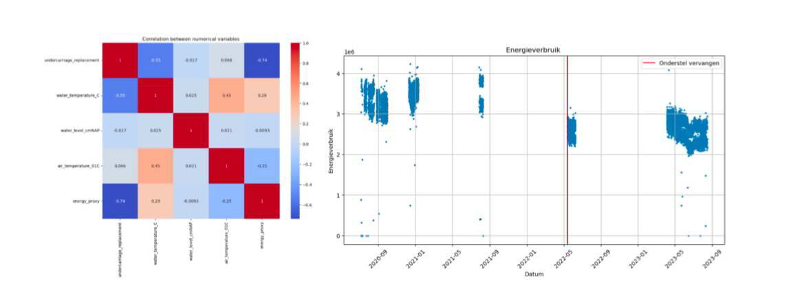
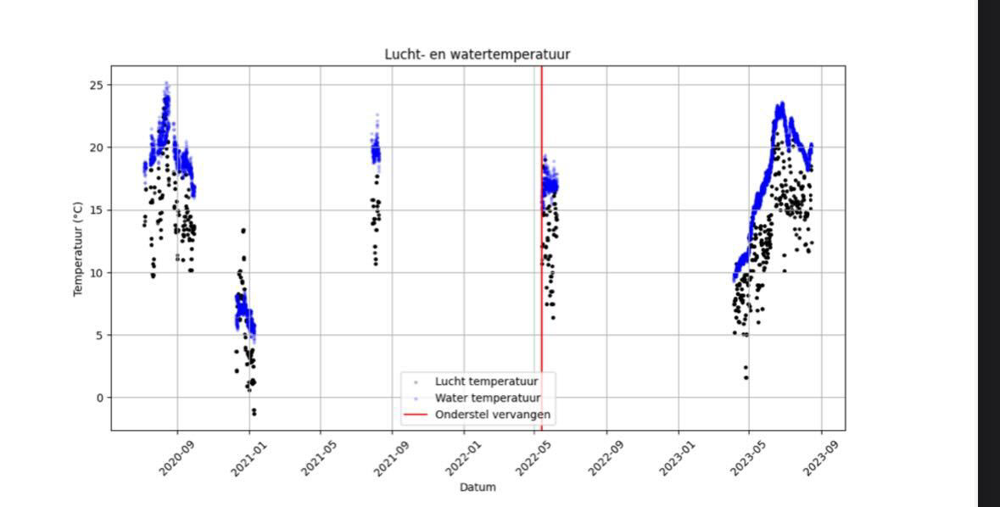

In mijn tweede jaar van de opleiding HBO-ICT heb ik een Data Science project gedaan voor Rijkswaterstaat met de focus op de krammersluizen.
Probleemstelling
De krammersluizen zijn vier sluizen die toegang vormen voor scheepvaart tussen Zeeland en grote rivieren door de Philipsdam. Na verloop van tij ontstonden er storingen tijdens het openen en sluiten van de sluisdeuren. De storingen ontstonden in de rollagers van de deur. Het lectoraat Data Science van HZ University of Applied Sciences heeft een model gemaakt dat voorspelt wanneer e kans op storingen stijgt, hieruit bleek dat het energieverbruik een indicator kan zijn voor aankomende storingen.
Het doel van it project was dan ook: Kan het energieverbruik gebruikt worden als een indicator voor aankomende storingen waardoor er op tijd onderhoud kan worden gepleegd?
Werkwijze
Om antwoord te geven op deze vraag zijn mijn groepje en ik aan de slag gegaan doormiddel van de CRISP-DM methodiek. Zo is er eerst een lineaire regressiemodel gemaakt als startpunt van het onderzoek en vanuit dit punt nieuwe features bedacht om betere modellen te kunnen ontwikkelen. Er zijn verschillende diagrammen gemaakt om te kijken of de bedachte features een correlatie hebben met energieverbruik. En hier zijn verschillende random forest regressor modellen van gemaakt om zo het energieverbruik te voorspellen
Conclusie
Als conclusie van ons onderzoek is het mogelijk om het energieverbruik te voorspellen doormiddel van de modellen. Als het energieverbruik voorspelt kan worden, kunnen de rollagers op tijd worden vervangen wat weer kosten bespaard.
Mijn ontwikkeling
Door dit project heb ik veel ervaring kunnen op doen op het gebied van Data Science. Zo heb ik verschillende diagrammen gemaakt en vanuit daar onderzoek gedaan naar de mogelijke factoren. Ook heb ik geleerd om features te maken en combineren om zo op verschillende conclusies te komen. Het was al met al een erg leerzaam traject waar ik eerst nog weinig van wist.